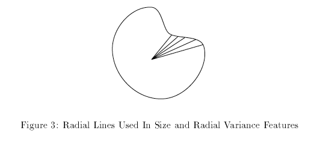
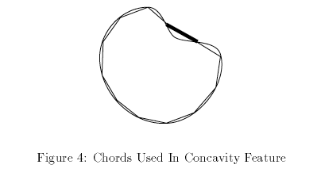
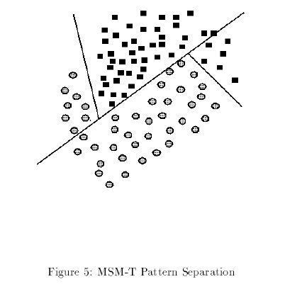

<!DOCTYPE html>
<html lang="en">
<head>
  <link rel="icon" type="image/x-icon" href="img/emoji.png">
  <title>Cytology | Article</title>
  <meta charset="utf-8">
  <meta http-equiv="X-UA-Compatible" content="IE=edge">
  <meta name="viewport" content="width=device-width, initial-scale=1">
  <!-- Bootstrap -->
  <link href="css/bootstrap.css" rel="stylesheet">
  <link href="css/modern-business.css" rel="stylesheet">
  <!--[if lt IE 9]>
    <script src="https://oss.maxcdn.com/libs/html5shiv/3.7.0/html5shiv.js"></script>
    <script src="https://oss.maxcdn.com/libs/respond.js/1.4.2/respond.min.js"></script>
  <![endif]-->
</head>
<body>
  <nav class="navbar navbar-inverse navbar-fixed-top navbar-toggleable-xs" role="navigation">
    <div class="container">

      <div class="navbar-header">
        <ul class="nav navbar-nav navbar-header">
          <li id="home">
            <a href="index.html"><span></span> Cytology</a>
          </li>
        </ul>
      </div>

      <div class="collapse navbar-collapse navbar-ex1-collapse">
        <ul class="nav navbar-nav navbar-right">
          <li id="folder" class="active">
            <a href="folder.html"><span class="glyphicon glyphicon-folder-open"></span></a>
          </li>
          <li id="about">
            <a href="about.html"><span class="glyphicon glyphicon-user"></span></a>
          </li>
        </ul>
      </div>
    </div>
  </nav><br><br><br><br>

  <div class="container">
    <div class="row">
      <div class="col-sm-1"></div>
      <div class="col-sm-10">
        <div id="myCarousel" class="carousel slide" data-ride="carousel">
        <!-- Indicators -->
        <ol class="carousel-indicators">
          <li data-target="#myCarousel" data-slide-to="0" class="active"></li>
          <li data-target="#myCarousel" data-slide-to="1"></li>
          <li data-target="#myCarousel" data-slide-to="2"></li>
        </ol>

        <!-- Wrapper for slides -->
        <div class="carousel-inner">
          <div class="item active">
            <center></center>
          </div>

          <div class="item">
            <center></center>
          </div>

          <div class="item">
            <center></center>
          </div>
        </div>

        <!-- Left and right controls -->
        <a class="left carousel-control" href="#myCarousel" data-slide="prev">
          <span class="glyphicon glyphicon-chevron-left"></span>
          <span class="sr-only">Previous</span>
        </a>
        <a class="right carousel-control" href="#myCarousel" data-slide="next">
          <span class="glyphicon glyphicon-chevron-right"></span>
          <span class="sr-only">Next</span>
        </a>
      </div>
    </div>
    <div class="col-sm-1"></div>
  </div>
  </div>

  <div class="container">
    <br><hr><br>
    <div class="col-sm-1"></div>
    <div class="col-sm-10">
      <article><font size="5">
        <h3><b><i>Features</i></b></h3>
        <p align="justify" style="text-indent:3em;">
          The computer vision diagnostic system currently extracts eleven dierent features from the isolated cell nuclei. As in previous work, all of the features are numerically modeled such that larger values indicate a higher likelihood of malignancy. Unless otherwise noted, the value of a feature for an image is the mean of the values for the individual cell nuclei. The extracted features are as follows:
          <ol type="1" align="justify">
            <li><i>Size</i><br>
              Size of an individual nucleus is measured by averaging the length of the radial line segments defined by the center of the snake and the individual snake points. See Figure 3.
            </li>
            <li><i>Perimeter</i><br>
              Number of pixels making up the boundary of the snake is used to measure perimeter.
            </li>
            <li><i>Area</i><br>
              Nuclear area is measured simply by counting the number of pixels on the interior of the snake andadding one-half of the pixels in the perimeter.
            </li>
            <li><i>Compactness</i><br>
              Perimeter and area are combined to give a measure of the compactness of the cell nuclei using the formula perimeter<sup>2</sup>/area. This dimensionless number is minimized for a circle and increases with the irregularity of the boundary. However, this measure of shape also increases for nuclei which are elongated, which is not necessarily an indication of malignancy. The feature is also biased upward for small cells because of the decreased accuracy imposed by digitization of the sample. In fact, no single shape measurement seems to capture the idea of irregular shape which is an indicator of malignancy.
            </li>
            <li><i>Radial Variance</i><br>
              The variance of the radial lines used to measure size is computed, giving a dierent measurement of nuclear irregularity. Again, the value of this parameter increases for elongated as well as oddly shaped nuclei.
            </li>
            <li><i>Concavity</i><br>
              In a further attempt to capture shape information we measure the number and severity of con cavities or indentations in a cell nucleus. We draw chords between non-adjacent snake points and measure the extent to which the actual boundary of the nucleus lies on the inside of each chord. See Figure 4. Note that a circular or elliptical nucleus would show no concavity.
            </li>
            <li><i>Texture</i><br>
              The texture of the cell nucleus is measured by finding the variance of the gray scale intensities in the component pixels. This is an approximation of Bland Nuclear Chromatin and Normal Nucleoli parameters described visually.
            </li>
            <li><i>Uniformity of Size</i><br>
              We compute the average dierence between the size of each nucleus and the mean size to measure how the nuclear size varies among the cells in an image.
            </li>
            <li><i>Uniformity of Shape</i><br>
              Using the Compactness measurement for shape, the average dierence is computed as in Uniformity of Size.
            </li>
            <li><i>Worst Size</i><br>
              Along with the average size and the variation of size, we would also expect the maximum size of the nuclei to be a diagnostic indicator. Rather than simply finding the maximum, we average the size of the three largest nuclei in order to reduce the possible effect of one extreme cell, or an operator error.
            </li>
            <li><i>Worst Shape</i><br>
              This is computed in the same manner as the Worst Size feature by averaging the three largest Compactness measurements.
            </li>
          </ol>
        </p>
        <h3><b><i>Classification</i></b></h3>
        <p align="justify" style="text-indent:3em;">
          An automated classification system that is slightly dierent from MSM was used to test the eectiveness of these features in diagnosing new samples. This classification method, known as MSM-Tree (MSM-T), uses a linear programming model to iteratively position separating planes in the 11-dimensional feature space of the examples. If the set of benign points can be separated from the set of malignant points by a single plane, the first plane will be so placed between them. If the sets are not linearly separable, MSM-T will construct a plane which minimizes an average distance of misclassified points. The procedure is recursively repeated on the two regions generated by each plane until each of the final regions contains mostly points of one category. See Figure 5. The final separation can be thought of as a piecewise-linear fence in the feature space that separates one set from the other.
        </p>
      </article></font>
    </div>
    <div class="col-sm-1"></div>
  </div>

  <div class="container">
    <ul class="pager">
      <li class="previous"><a href="article1.html">&lt;&lt; Previous</a></li>
      <li class="next"><a href="article3.html">Next &gt;&gt;</a></li>
    </ul>
  </div>

  <div class="container">
    <hr>
    <footer>
      <div class="row">
        <div class="col-sm-12">
          <p> Copyright &copy; Kezia Suhendra 2017</p>
        </div>
      </div>
    </footer>
  </div>

  <script src="https://ajax.googleapis.com/ajax/libs/jquery/1.11.0/jquery.min.js"></script>
  <script src="js/bootstrap.js"></script>
  <script src="js/modern-business.js"></script>
</body>
</html>
